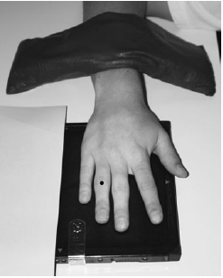

Finger(PA)
Centering point:Directed to the proximal interphalangeal joint of affected digit
Perpendicular to the IR

Cassette Size:18cm x 24cm (8 x 10ins)
Landscape, divided in half, usually fits 2 projections
Exposure Factors:50kVp on
2MaS
FFD:100cm
Bucky/Grid:No
Filter:No
Collimation:Centre: Proximal interphalangeal joint
Shutter A: From end of distal phalanx to half adjoining metacarpal
Shutter B: To include soft tissue
Pathologies:Fracture, dislocation, foreign body, infection, tumour, arthritis
Position of patient and cassette
- Seat patient at end of the table.
- Forearm placed on table.
- Extend digit palmar surface down.
- Palm and digit positioned flat against IR.
- Separate digits.
- Align the digit with both the IR and the central ray.
- Proximal interphalangeal joint of interest in centre.